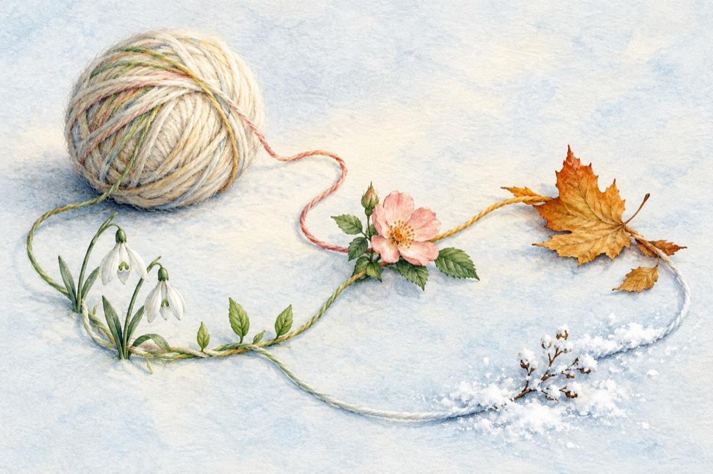

Timpul
Timpul își are și el anotimpul
Și nu e factorul suprem
Natura le ține rândul
Păstrându-le ca într-un ghem.
Primăvara le dă drumul
Cu primii ghiocei.
Renăscând viața și timpul
Cu tot alaiul după ei.
Cum un copil e primăvara
Cu muguri, frunzulițe, flori,
Spre majorat crescând cu vara
Natura peste tot e-n sărbători!
Când am ajuns la majorat
Se cere timpului și vieții să-și dea vama
Natura, ea i-a obligat
Ca să le primească toamna!
Și-așa fără ca să-și dea seama
Că misiunea lor s-a-nfăptuit,
Venit-a peste ei, ea, iarna,
Și-acum iată-i că-au încărunțit!
Reîntregind al său sistem
Natura-ncet lucrează,
Desfășurându-și al său ghem
Cu primăvara ce din nou se instalează!
Vasile Groza